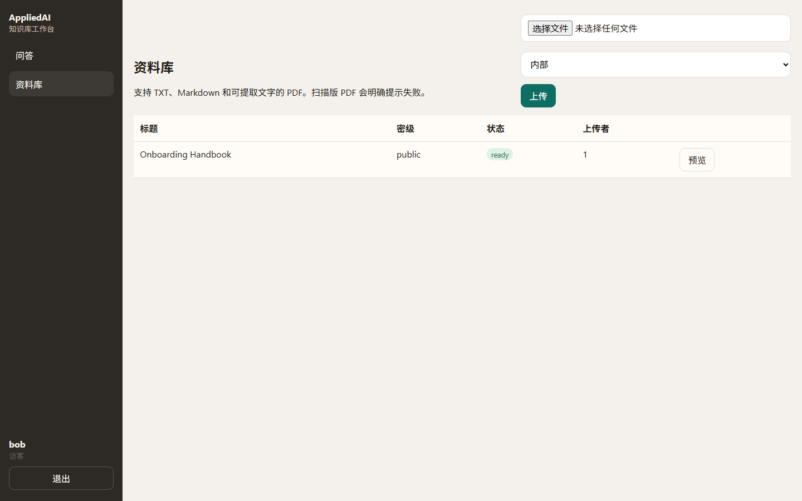
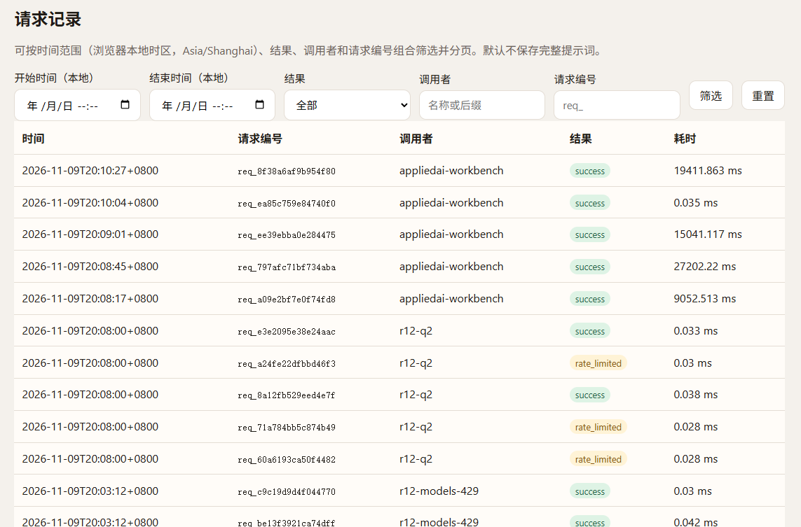

核心产品问题：投资新手直接问大模型“怎么配 ETF、收益多少”，会同时踩中两个 AI 产品坑——模型会编造历史收益与费用，且对话建议停留在文字层无法直接验证。QuantLab 将大模型策划解读与确定性回测引擎解耦，并用真实组外试用反馈持续迭代上手路径。
1. AI 生成方案
DeepSeek 双模型
→
2. 程序参数校验
字段与范围检查
→
3. 用户显式确认
载入并核对计划
→
4. 固定引擎计算
收益 / 回撤 / 费用
→
5. 双记录对照复盘
引擎指标 + AI 解读

正式站双记录复盘（2026-11-19）：并列呈现固定引擎指标表（记录 A 自定义比例 vs 记录 B 均分持仓）与 AI 复盘解读，支持按选定记录核对结论。

6 只 ETF 有 1,416 个共同交易日（含 2020 年预热期），本次回测覆盖 1,211 个交易日。买卖各按成交额收取 5 bps，图中为当前策略与 4 条基准曲线。可从快照直接进入 AI 教练复盘。
复盘口径错位洞察 → V2 迭代规格
双记录复盘实测中，AI 解读先注明留出期再评“回撤记录 A 略低”，但顶部对照表仅展示全期最大回撤（A 48.87% > B 48.49%）。核对引擎重算确认：全期回撤 B 更低，2025 留出期回撤 A 17.86% < B 20.10%——模型未算错，根因是顶表缺留出期行，据此提出双期间并列展示写入 V2 迭代规格。
人机信任边界与 60 题评测集设计
收益曲线、最大回撤与 5 bps 费用全由固定引擎计算；另按口语意图、参数边界、合规拒答等 6 类场景构建 60 题标准答案集与自动判分脚本（校验 JSON 结构、引擎数值溯源与全期/留出期归属，语义模糊题转人工复核），用于 Prompt 版本同题回归。
10 位组外用户试用反馈 → 产品改动（团队确认匿名反馈汇总，2026-11-14 至 11-16）
| 关键环节 | 组外试用暴露的真实痛点 | 落地的产品改动 |
|---|
| 首次上手与登录 | 首访面对 ETF、日期、策略与费率门槛过高；访客希望注册前先体验 | 新增预设引导练习与免登录对比示例（等权 vs 自定义比例同口径对照） |
| 行情 → 练习衔接 | 在行情页选好的 ETF 与区间切入练习页后被重置，需重复操作 | 打通行情页状态透传，自动将所选标的与日期区间带入模拟练习 |
| 保存与记录管理 | 保存结果需滚回设置区；缺少删除旧示例记录的入口 | 将保存与复盘笔记控件移至回测结果旁；新增带二次确认的删除记录功能 |
| AI 教练与仓位 | 单一示例问题引导不足；试用者希望保留部分虚拟现金而非强制满仓 | 新增快捷提问并拆清策划/复盘界面；支持自定义权重合计 ≤100%，余款留存现金 |
注：以上 4 类问题来自团队汇总的 10 位组外试用者匿名反馈，均已转化为对应功能改动上线。
核心产品问题：英语授课课堂同时面临网络波动、专业术语密集以及“录音器 + PDF 课件 + 翻译 + 笔记”多窗口切换割裂的问题。ClassNote AI 选择本地优先架构，将课堂采集、本地转写翻译与课后知识查找整合到单一工作台，并重点解决本地 AI 模块失效时的用户信任问题。

ClassNote AI 模型实验室界面：将 faster-whisper 本地模型分档（tiny / base 默认推荐 / small / medium / large-v3），用非技术语言向学生说明速度、内存与准确率取舍，显式提示“已安装，待加载验证”与“本机处理、不上传课堂内容”。
产品方案对比：为什么做“本地优先”而不是又一个云端 AI 笔记
| 方案形态 | 弱网 / 离线可用 | 课堂隐私控制 | 核心体验短板 | 产品定位取舍 |
|---|
| 云端协作 AI 笔记（如通用会议工具） | 弱（强依赖上云） | 内容默认上云 | 教室弱网易断流；通用会议模板不贴合竖版课件+双语复习 | 不与之正面拼云协作 |
| 本地文件夹 + 系统搜索 | 强 | 强 | 音频、课件与笔记割裂，无法跨资料检索术语 | 仅作基线对比 |
| 本地优先工作台（ClassNote） | 强（本机闭环） | 强（默认不上云） | 端侧算力受限，需显式管理模型体积与故障降级 | 采纳：切入英语课堂垂直刚需 |
关键设计：AI 失效与核心资产保存彻底解耦
课堂自用曾发生“录音继续但字幕全空”故障（所选本地模型缺失，界面却未提示音频是否在保存）。据此确立先保全内容、再处理转写依赖原则：新增模型加载预检、改选可用模型与先录后转降级入口，将音频保存、转写与翻译拆成三组独立状态提示。
试用反馈收敛与安装版交付
结合自用与同学试用反馈，重点迭代竖版 PDF 课件阅读、翻页流畅度与知识库导航，沉淀完整 PRD、竞品对比与用户排障 FAQ；已交付可安装 macOS 版本（DMG）完成课堂实测与课程重开验收，并编写 Windows 打包配置规格。
核心异常降级、续录恢复与安装版验收（对应 PRD CN-006 ~ CN-009）
| 验收环节 | 异常状态流转与降级规则 | 实测结果与交付证据 |
|---|
| 开课前模型预检 | 启动录音前检查本地 faster-whisper 模型文件与加载可用性 | 缺失模型时弹窗引导改选已装档位或一键进入“先录后转” |
| 三状态独立提示 | 将本地音频分片保存、实时转写、双语翻译拆为独立状态栏指示 | 转写卡顿或报错不中断底层录音落盘，消除“无字幕=没录上”恐慌 |
| 故障续录恢复 | 按分片时间轴合并异常中断录音并去重补跑离线转写 | 历史课堂故障后找回约 76.8 分钟有效录音（461 分片、0 重复字幕） |
核心产品判断：企业内部知识问答里，“召回相关”不等于“有权查看”。一旦受限片段进入 Prompt 上下文，提示词保密与生成后过滤均存在绕过风险。本套原型将检索前 ACL 隔离（AppliedAI）与统一转发网关（ServeTrace）打通，把权限与可观测规则转化为可复现的产品行为。

未授权访客（左下角 bob 访客）前置 ACL 隔离实测：库内共存有 public / internal / secret 共 5 篇分密级文档，访客可见与可检索范围在检索前即被限制为唯一 1 篇公开文档 Onboarding Handbook（受限切片 0 暴露）。

ServeTrace 调用控制台（局部放大）：支持按时间、调用者、结果（success / rate_limited）与请求编号组合排查耗时，默认脱敏不保存完整提示词。
方案对比：为什么选择检索层前置 ACL
| 方案 | 受限内容是否进上下文 | 典型失效模式 | 产品取舍结论 |
|---|
| 提示词保密 | 是（已检索入 Prompt） | 模型受引导或间接注入直接泄露原文 | 不可作为主防线 |
| 生成后关键词过滤 | 是（已参与推理） | 同义改写绕过；额外增加推理时延 | 仅适合作为纵深辅助层 |
| 检索层前置 ACL | 否（检索即按密级滤除） | 依赖文档标签准确性与撤权同步机制 | 采纳：边界清晰且可对照验收 |
权限对照验收、异常兜底与网关日志规则
| 功能模块 | 产品规则与交互设计 | 已验证行为与适用边界 |
|---|
| 前置 ACL 正反对照 | 构建“同题双身份（未授权 vs 授权）+ 公开题基线”对照用例，同步校验越权拦截与合法召回 | 5 篇分密级演示文档下 FTS5 / Chroma 双路径均通过 9 组对照（未授权 0/9、授权 9/9、公开 2/2） |
| 真实模型端到端联调 | 本地接入 Qwen3.5-27B + BGE 中文嵌入：带引用点击查看原文、无依据问题显式拒答、权限撤销后历史脱敏且移出上下文、禁止静默回退模拟回答 | 已跑通登录、资料库分权、访客隔离、引用溯源、多轮追问与重启恢复全流程走查 |
| 工具调用契约 | 定义工具白名单、调用参数校验及执行失败 / 超时 / 未知工具三类结构化错误兜底 | 10 组固定路由用例加 3 类异常分支在 Mock 环境全部通过；真实模型多步自主规划列为后续迭代项 |
| ServeTrace 转发网关 | 凭证生命周期（创建仅显一次明文、掩码列表、停用与删除分级拦截）、单 Key 滑动窗口限流与重试引导、请求 ID 贯穿日志 | 支持 Redis / 内存双限流后端与非流式稳定转发，默认脱敏不落盘完整 Prompt |
一、银行营销外呼筛选：从模型阈值到成本收益与固定预算排序（CSI205 个人项目）
基于 UCI Bank Marketing（45,211 条样本），剔除通话结束后才产生的事后泄漏字段 duration，在 8,907 条独立测试集扫描逻辑回归分类阈值，将混淆矩阵转化为外呼成本收益敏感性矩阵与固定坐席预算 Top-K 排序。

测试集（n=8,907）阈值扫描：从 0.50 降至 0.20 新增 677 个外呼目标，其中 268 正例、409 误报（边际命中率 39.6%）。
| 外呼预算 Top-K | 历史正例 | 历史命中率 |
|---|
| Top 100 | 81 | 81.0% |
| Top 200 | 148 | 74.0% |
| Top 500 | 296 | 59.2% |
| Top 966（阈值 0.20） | 469 | 48.6% |
| 假设成本 / 价值 | 0.20 净值 | 0.50 净值 | 推荐策略 |
|---|
| 20 / 200 | 74,480 | 34,420 | 选 0.20 |
| 50 / 200 | 45,500 | 25,750 | 选 0.20 |
| 100 / 200 | -2,800 | 11,300 | 切回 0.50 |
口径说明：成本与单客价值为决策敏感性假设参数；历史观测正例命中不等同于外呼因果增量转化，真实上线需以 A/B 对照实验验证。
二、Film Database System：PostgreSQL 关系建模、异常隔离与分母界定（个人项目）
围绕 4 张源表（38,105 行）设计 3NF 关系模式与外键约束：入库 38,006 行干净数据，按原因隔离 99 条异常关联（76 条孤儿角色、23 条关联失效评分）；修复 ISO / Excel 混合日期解析缺陷恢复 83 个出生年，并沉淀 12 条核验 SQL。
| 正式数据表 | 入库行数 | 隔离异常行数 | 关键数据质量与统计分母核验结论 |
|---|
| films（电影） | 4,949 | 0 | 仅 952 部含评分记录（19.2%），严格区分评论行数（4,945）与影片总数分母 |
| people（人物） | 8,397 | 0 | 兼容 ISO 与 Excel 序列日期后，有效出生年由 6,069 恢复至 6,152，消除 83 条误置空 |
| roles（角色关联） | 19,715 | 76 | 隔离引用不存在影片 ID 的孤儿记录；明确人物关联统计包含导演等全角色口径 |
| reviews（评分） | 4,945 | 23 | 隔离缺影片 ID（19 条）与无效外键（4 条）；明确缺失 genre / review_date 字段边界 |
三、HDFS + Spark 四节点集群：462 万条电商评论聚合与跨机耗时剖析（CSI205 · 4 人小组）
| 工程与分析维度 | 集群配置与数据处理口径 | 实测结果与阶段耗时归因 |
|---|
| 多节点部署与聚合 | 4 台异构主机（1 Master + 3 Worker，HDFS 128 MiB 双副本，Spark 3 Executors 单节点各 1 核 / 2 GiB 共 6 GiB） | 关联 8 分片 Parquet（4,624,615 条评论、137,249 件商品、54 类目），6 轮运行与基准 SQL 逐字节一致；识别头部双类目占 62.94% 评论量 |
| 跨机排障与瓶颈定位 | 定位并放行 Worker 节点 UFW 拦截的 DataNode（TCP 9866）与固定 BlockManager（TCP 7337）端口 | 单机 4 虚机中位 11.22s vs 四物理机无线桥接 36.42s：双 COUNT(DISTINCT) 触发 Expand 膨胀（1,387 万行）叠加高无线 RTT（183–209 ms）使 Shuffle 由 2.19s 增至 17.91s |